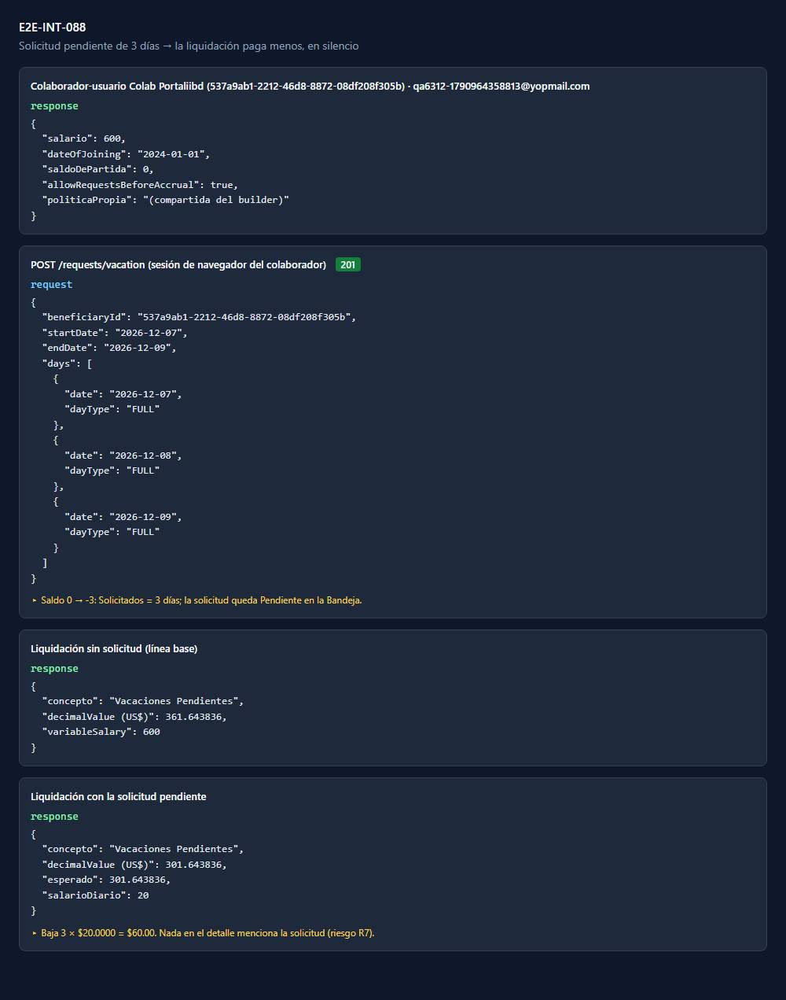
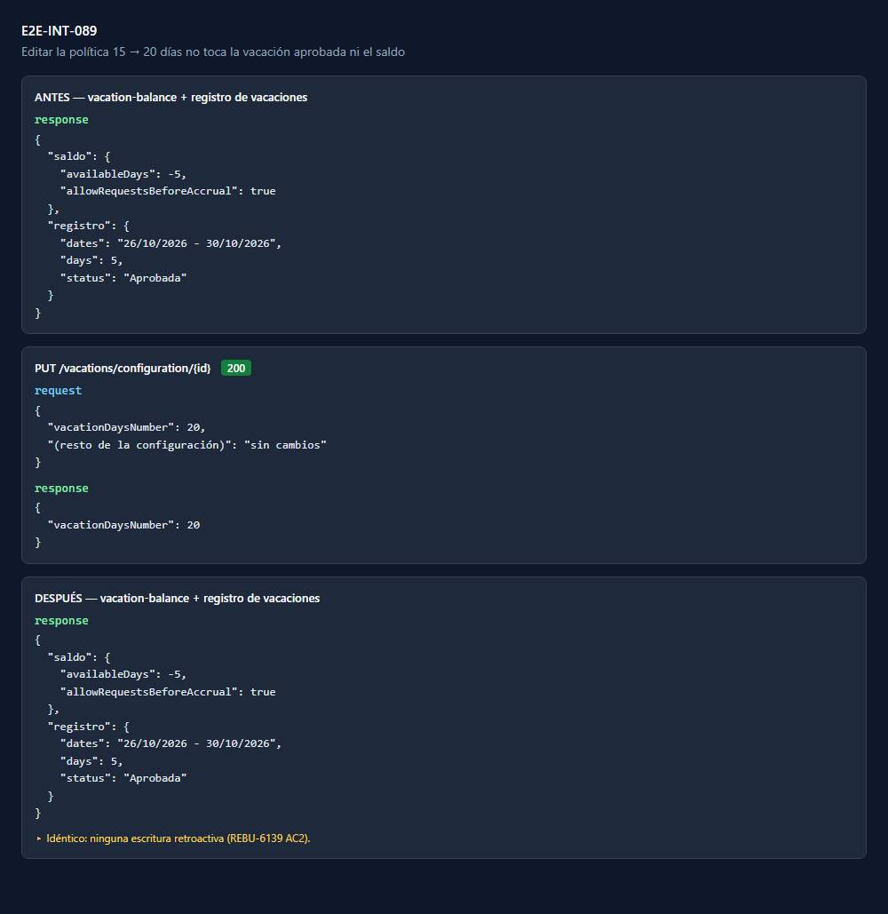
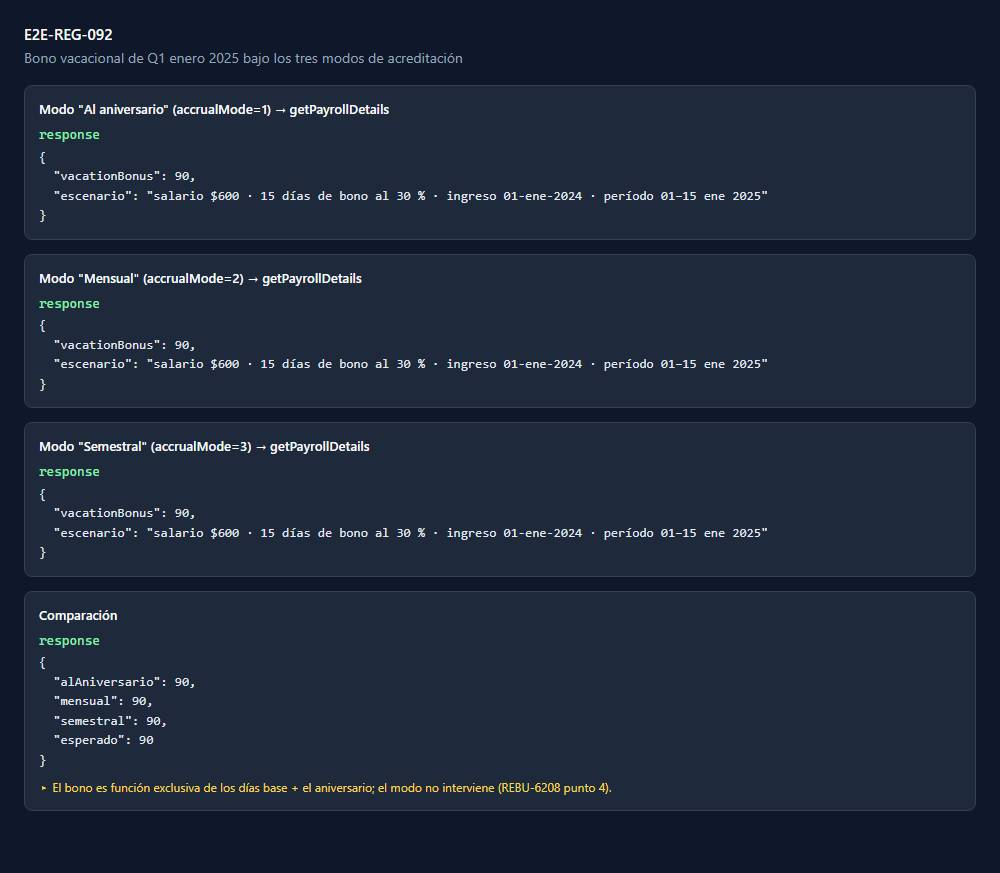
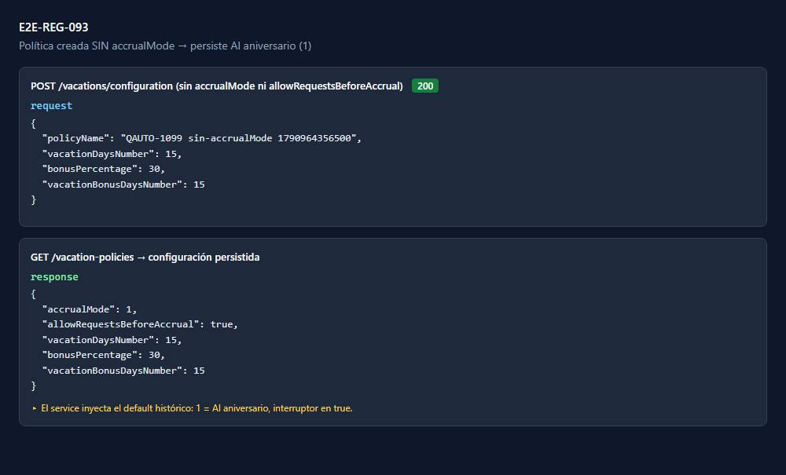
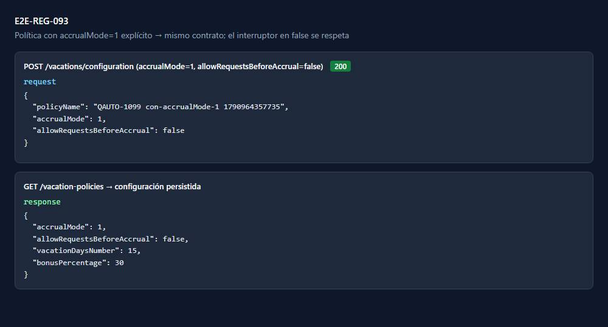
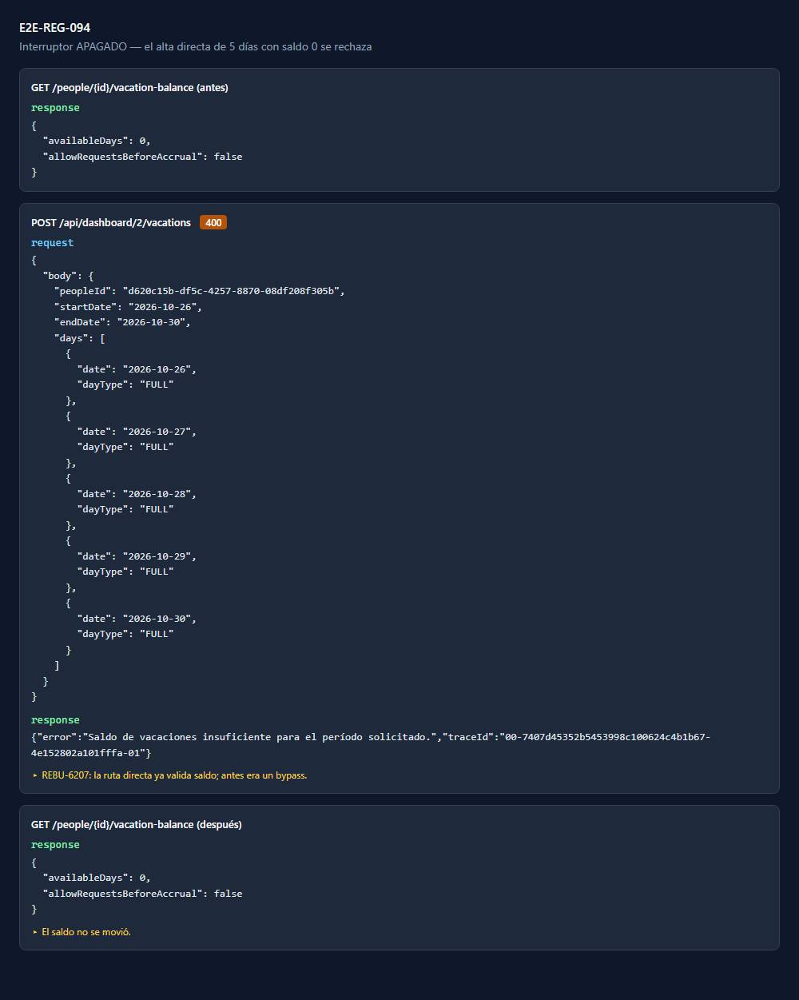

La épica agrega un motor de acreditación (Al aniversario / Mensual / Semestral) y un interruptor para tomar días antes de que se acrediten.
El riesgo no está en la pantalla de la política sino en lo que la consume: el saldo y las solicitudes (INT-089, REG-094), el pago de la
liquidación (INT-088), el bono vacacional de la planilla (REG-092) y el modo Al aniversario que debe quedar intacto (REG-093).
Cada flujo verifica con el contrato real del BE, no con la pantalla. Certificación en Jira: REBU-6371 (tabla TC · pasos · esperado · obtenido · estado, bajo la épica) y evidencia en cada ticket QAUTO-1096..1100 (Finalizadas). Corrida del 02-10-2026 (Jessica): 10 / 10 tests PASS.
Cambios de la corrida del 02-10 (PR #132)
IDs de flujo renumerados: los del PR #131 (E2E-INT-001..003 / E2E-REG-001..003 / EXP-001..002) chocaban con otra épica — la numeración es global por prefijo — y pasan a E2E-INT-087..089, E2E-REG-092..094, EXP-020..021.
E2E-INT-088 (QAUTO-1096) portable: ya no usa a Alejandra Perales ni la sesión TEST_VEREDITAR de una máquina; crea su propio colaborador-usuario (invitación con rol Colaborador + onboarding por yopmail) y abre su sesión de navegador.
Sesión de colaborador de la suite:auth-colaborador.setup.ts crea y reutiliza un colaborador-usuario propio cuando la credencial del .env no loguea (marcos.rivera ya no existe en co.2).
Qué NO cubre este release
E2E-INT-087 — liquidación con acreditación Mensual/Semestral: el libro mayor (PeopleVacationAccrualRecords) solo lo escribe el cron real y no hay endpoint de siembra; queda pendiente pedirlo a dev.
EXP-020 (aniversario acreditado después de la salida, REBU-6287) y EXP-021 (recorrido en tiempo real) son exploratorios y no se automatizan.
Tampoco se ejecuta el job de aniversario ni se verifica que “la próxima acreditación usa el valor nuevo”: dependen del cron.
Hallazgo de la corrida
REBU-6349 — el mensaje de bloqueo del modal Solicitar (interruptor apagado) tiene un color casi igual al fondo y es casi imperceptible; debe usar el rojo de validación del sistema. Subtarea de REBU-6140.
ID
Flujo E2E
Status
E2E-INT-088
Una solicitud de vacaciones pendiente reduce el pago de la liquidación, sin ninguna advertencia
Un colaborador-usuario propio creado por el spec (crearColaboradorConUsuario): persona de $600 con ingreso 01-01-2024, planilla finalizada, invitación con rol Colaborador y onboarding por correo de yopmail; política Al aniversario con el interruptor de adelanto encendido (saldo de partida 0). La solicitud la tiene que originar el propio colaborador desde su sesión de navegador (abrirSesionColaboradorPorUI), por eso hace falta un usuario del portal y no basta con la persona que fabrica un builder. Ninguna cuenta compartida ni credencial fuera del repo.
Regla evaluada
REBU-6208 punto 3: el pago de Vacaciones Pendientes en la liquidación es (Acumulados − Tomados − Solicitados) × salario diario, y una solicitud Pendiente ya cuenta como Solicitados. El descuento es silencioso (riesgo R7): RRHH liquida creyendo que pagó el saldo completo y en realidad descontó una solicitud que después puede rechazarse, con el colaborador ya fuera. El oráculo sale de la propia liquidación sin solicitud, no de una fórmula reimplementada.
Setup
1. Crear el colaborador-usuario y leer GET /people/{id}/vacation-balance (saldo de partida 0, adelanto encendido; si la política compartida no lo tuviera, se crea una propia y se reapunta a la persona). 2. Línea base:POST /people/{id}/termination (fecha de hoy) → leer Vacaciones Pendientes en el detalle de la liquidación (V0) → PATCH /people/{id}/termination (revertir). 3. Con la sesión de navegador del colaborador: POST /requests/vacation por 3 días completos (dayType: "FULL"), ~60 días adelante.
Pasos
1. Verificar la solicitud en la bandeja → Esperado: aparece Pendiente. 2. Leer el saldo → Esperado: baja exactamente 3 días (Solicitados). 3. Desvincular de nuevo, misma fecha, y leer Vacaciones Pendientes (V1) → Esperado: V1 = V0 − 3 × (salario / 30). 4. Buscar la palabra “solicitud” en el detalle de la liquidación → Esperado: ninguna mención (el descuento es silencioso). 5. Limpieza (siempre, en finally): revertir la desvinculación y rechazar la solicitud → Esperado: el colaborador vuelve a Activo.
Colaborador-usuario qa6312-1790964358813@yopmail.com (persona 537a9ab1…). Saldo 0 → −3 (Solicitados = 3; solicitud 394 Pendiente en la Bandeja). Vacaciones Pendientes: $361.643836 sin solicitud → $301.643836 con ella = −$60.00 (3 × $600 / 30). El detalle de la liquidación no menciona la solicitud. Desvinculación revertida, solicitud rechazada, colaborador Activo. ✅ Corrida anterior (01-10, Rollffin, con Alejandra Perales): saldo 19.75 → 16.75 y $484.02 → $284.02 = −$200.00 (3 × $2,000 / 30): misma regla, otro salario. Nota: la solicitud admite solo dos opciones desde el front — día completo (dayType: "FULL") o medio día AM/PM —, así que cualquier otro valor se cuenta como medio día por diseño. El caso manda "FULL" y aserta N = 3 exacto.
Evidencia
01 — Solicitud pendiente de 3 días → la liquidación paga menos, en silencio

Status
PASS
E2E-INT-089
Editar la política a mitad de ciclo no toca la vacación aprobada ni el saldo
Un colaborador nuevo (builder) con política Al aniversario, 15 días, interruptor “Permitir tomar días antes de que se acrediten” encendido; saldo de partida 0.
Regla evaluada
REBU-6139 AC2: “nunca se le resta a un colaborador un día que ya tenía acreditado”. Editar la política con un ciclo en curso no debe escribir retroactivamente sobre lo ya resuelto. Si el PUT reprocesara registros o saldos, la edición de una política corrompería el historial de aprobaciones ya cerradas — un quiebre de confianza en Aprobaciones, no solo en Vacaciones.
Setup
1. Crear el colaborador con su política (15 días). 2. Dar de alta una vacación de 5 días por la ruta directa del admin (POST /vacations) → queda Aprobada y el saldo en −5. 3. Guardar el estado de partida: vacation-balance y absences-and-vacations?recordType=VACATION.
Pasos
1. PUT /vacations/configuration/{id} con vacationDaysNumber 15 → 20 (configuración completa) → Esperado: 200. 2. Releer la configuración → Esperado: vacationDaysNumber = 20. 3. Releer registro y saldo → Esperado: idénticos a los de antes de editar.
Resultado esperado
la edición se guarda, y ni el registro de vacaciones ni el saldo cambian; solo la próxima acreditación usaría el valor nuevo.
Resultado obtenido
La vacación quedó Aprobada por 5 días y el saldo en −5. El PUT respondió 200 y la configuración (política 4206) quedó en 20 días. Después de editar, el registro (comparado completo, toEqual) y el saldo (−5) son idénticos. ✅ Alcance: la vacación se registró por la ruta directa del admin, no por Solicitud + Aprobación; el invariante protegido es el mismo. El cruce “la próxima acreditación usa el valor nuevo” depende del cron y no se cubre.
Evidencia
01 — Editar la política 15 → 20 días no toca la vacación aprobada ni el saldo

Status
PASS
E2E-REG-092
El bono vacacional no depende del modo de acreditación de la política
Tres colaboradores idénticos (salario $600, ingreso 01-ene-2024, 15 días de bono al 30 %), cada uno con su política descartable en un modo distinto: Al aniversario (1), Mensual (2) y Semestral (3).
Regla evaluada
El bono vacacional no lee el libro de acreditaciones: sigue prorrateando desde el último aniversario (REBU-6208 punto 4). Su monto es función exclusiva de los “días base del bono” (REBU-6141) y la fecha de aniversario. Importa porque cualquier cambio futuro que acople el bono al modo nuevo pagaría distinto a colaboradores con la misma configuración, y eso solo aparece al correr la planilla.
Setup
1. Para cada modo: crear la política con accrualMode 1/2/3 y el colaborador con ingreso 01-ene-2024. 2. Crear la planilla quincenal con el período 01–15 ene 2025 (donde cae el aniversario).
Pasos
1. Avanzar el wizard hasta Aportes y Provisiones y leer el bono de la fila del colaborador, en cada modo → Esperado: $90.00 = ($600 / 30) × 15 días × 30 %. 2. Comparar los tres montos → Esperado: idénticos.
Resultado esperado
el bono es $90.00 con los tres modos de acreditación.
Resultado obtenido
Bono $90.00 con Al aniversario (política 4203), Mensual (4204) y Semestral (4205); la comparación entre modos pasó. ✅ Alcance: el paso 2 del flujo documentado (“cambiar Mensual → Semestral entre dos corridas”) se cubre de forma equivalente comparando los tres modos con la misma configuración, en escenarios separados.
Evidencia
01 — Bono vacacional de Q1 enero 2025 bajo los tres modos de acreditación

Status
PASS
E2E-REG-093
Una política en modo “Al aniversario” conserva el contrato de configuración previo a la épica
Dos políticas individuales descartables en modo Al aniversario (15 días de vacaciones, bono 30 %, 15 días base del bono): una sinaccrualMode y otra con accrualMode = 1 explícito.
Regla evaluada
REBU-6138 AC2: el modo Al aniversario es el comportamiento actual y “no cambia”. La épica entera se apoya en esa garantía: las políticas que no migran a Mensual/Semestral no deben ver ningún cambio. Por eso una política creada sin el campo nuevo debe seguir cayendo en Al aniversario, y la sola presencia del campo no debe alterar los campos preexistentes.
Setup
1. POST /vacations/configuration sin accrualMode ni allowRequestsBeforeAccrual. 2. POST /vacations/configuration con accrualMode: 1 y allowRequestsBeforeAccrual: false.
Pasos
1. Releer la política creada sin el campo → Esperado: accrualMode = 1, interruptor true (default del servicio) y días de vacaciones, bono y días base intactos. 2. Releer la política con el campo explícito → Esperado: mismo contrato, y el false explícito se respeta (el default no lo pisa).
Resultado esperado
el default histórico se conserva y ningún campo preexistente se altera.
Resultado obtenido
Sin el campo (config 4209): accrualMode = 1, allowRequestsBeforeAccrual = true, 15 días / 30 % / 15 días base intactos. Con el campo explícito (config 4210): accrualMode = 1 y false respetado. ✅ Limitación declarada: la ejecución real del job de aniversario corre por un cron que no se puede disparar a demanda; este caso certifica el contrato de configuración, no la acreditación en sí.
Evidencia
01 — Política creada SIN accrualMode → persiste Al aniversario (1)

02 — Política con accrualMode=1 explícito → mismo contrato; el interruptor en false se respeta

Status
PASS
E2E-REG-094
El guard de saldo también aplica al alta directa de vacaciones del administrador
Dos colaboradores nuevos con política Al aniversario (saldo de partida 0): uno con el interruptor “Permitir tomar días antes de que se acrediten” apagado y otro encendido.
Regla evaluada
REBU-6207: antes, AddVacationIncidentCommandHandler no validaba saldo en absoluto — era una ruta de bypass del guard de la Solicitud. Con el interruptor apagado el alta directa debe bloquearse igual que la solicitud del portal; con el interruptor encendido debe permitirse y dejar el saldo negativo con su signo (REBU-6140 AC7).
Setup
1. Crear cada colaborador con su política y confirmar por GET /people/{id}/vacation-balance el interruptor y el saldo 0. 2. Armar una semana laboral de 5 días ~3 semanas adelante.
Pasos
1. Interruptor apagado: POST /api/dashboard/2/vacations por 5 días → Esperado: rechazo 4xx por saldo; el saldo no se mueve. 2. Interruptor encendido: mismo POST → Esperado: 200 y saldo −5.
Resultado esperado
paridad entre las dos rutas de entrada al mismo saldo: ninguna queda fuera del guard.
Resultado obtenido
Apagado (política 4207): 400“Saldo de vacaciones insuficiente para el período solicitado.” y saldo sin cambio (0). Encendido (política 4208): 200 y saldo −5. ✅ Trampa documentada: el payload va envuelto en { body: {...} }; sin el wrapper el BE responde 400 “body vacío”, que no es el guard — el caso verifica que el rechazo no sea ese.
Evidencia
01 — Interruptor APAGADO — el alta directa de 5 días con saldo 0 se rechaza

02 — Interruptor ENCENDIDO — el alta directa se permite y el saldo queda en −5